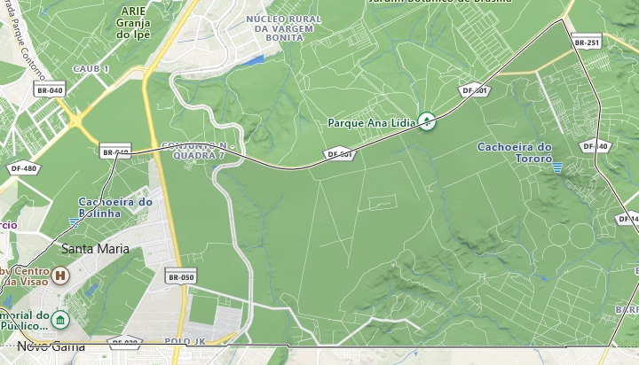
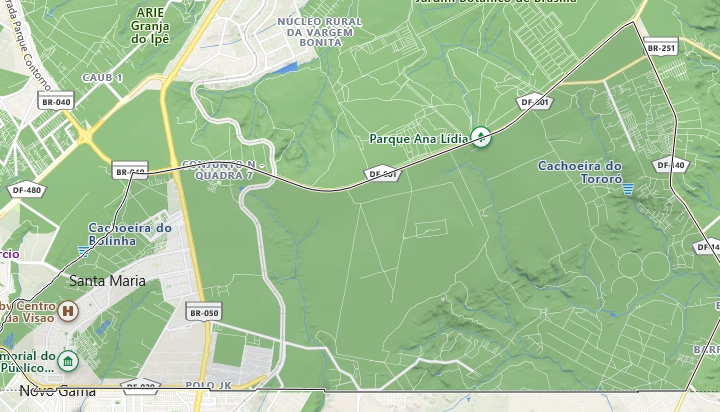

-Sobre a região-
Criada em 1992 Santa Maria é a 13ª Região Administrativa do Distrito Federal, contém em média 125 mil habitantes e é composta por áreas rurais e urbanas.
Seu nome se dá por causa de um rio que se encontrava no mesmo lugar antigamente. A região foi loteada para trabalhadores de baixa renda que veio construir a capital.
Santa Maria passa por um processo de crescimento, isso é perceptível aos moradores que hora ou outra se deparam com um novo prédio. Aquela pequena cidade está ficando para trás dando espaço a um novo lugar.
-Mapa da região-
 

-Pontos turísticos e suas histórias-
-Praça Central (Santinha):
A praça central é um dos pontos mais conhecidos da região, com uma estrutura que atende as necessidades da comunidade e um lindo pôr do sol, conta com uma pista de skate, um palco para apresentações, academia, uma quadra de vôlei e outra de futebol e também parquinhos públicos.
Outra atração muito importante da região que está presente na praça é a Santinha, monumento bastante conhecido pelos moradores.
É uma homenagem a Santa Mãe de Deus, padroeira da região, e o seu dia é celebrado em 1º de janeiro, que é ponto facultativo para os moradores de Santa Maria.
-Monumento Solarius :
O monumento Solarius é um presente do governo francês à nova capital do Brasil, quando a mesma estava sendo construída.
Simboliza a ocupação territorial do Distrito Federal e representa o esforço de todos os brasileiros no sentido de se construir a grande Capital.
Porém Lúcio Costa, arquiteto de Brasília, achou o monumento estranho e sugeriu que ele fosse colocado em um ponto bem longe. Foi assim que o nosso queridinho Chifrudo (apelidado assim pela população) foi parar em Santa Maria.
A escultura mede 16 metros e pode ser encontrada perto da BR-040, é um ponto turístico na região por sua forma peculiar, onde todos que moram lá já o viram ou ouviram falar, mas nem todos sabem da sua história.
Atualmente o monumento sofre um crítico estado de degradação, sua única restauração foi feita em 1987, e pelo visto não terá outra tão cedo.
-Depoimentos de moradores-
-Moradora mais antiga :
" Eu cheguei aqui no dia 04/02/1992, lembro que não tinha ônibus, a gente pegava um ônibus para Luziânia e parava umas quatro quadras antes e vinha andando. Eu tinha 17 anos estava grávida da minha primeira filha, minha irmã ganhou um lote aqui e eu vim com ela e meu cunhado. Logo de cara eu me encantei, pois lembrava o meu interior, tinha poucos vizinhos e todos eles muito acolhedores".
"Não tinha energia elétrica, as que tinham eram gambiarras que puxavam dos postes que tinham na Avenida Alagados, não tinha esgoto muito menos e a água que tinha era de caminhão pipa, e o caminhão só vinha 3 vezes na semana. Mesmo em toda essa precariedade eu me apaixonei por Santa Maria, pra mim estar ali era um novo recomeço".
"O tempo foi passando, a região foi crescendo, onde era as quadras 120/116 era tudo cerrado, a gente ia lá catar caju, as quadras 300/400/500 era fazenda ainda, não tinha sido loteada. Era tudo muito humilde mas os vizinhos eram unidos, e mesmo em toda essa precariedade a gente era feliz. A gente foi crescendo junto com Santa Maria, começou aparecer os primeiros mercadinhos, água encanada, energia, asfalto. Foi difícil, tinha criminalidade mas não era como agora, a gente não via as pessoas usando drogas publicamente".
"Lembro que na época de Copa, quem tinha a maior televisão abria o portão para todos da rua poderem assistir o jogo, na época de São João enfeitavam as ruas, tinha fogueira, assavam batatas e era muito bom. A Santa Maria Sul é mais velha que a Norte, mas hoje em dia a Norte é mais desenvolvida. Outra coisa que me lembro bem é das festas de comício, na época da política, tinha muitos shows, KLB já passou por aqui, Calypso, Gino e Geno, eram shows pra gente assistir assim de perto sabe? E eu tô aqui até hoje, no dia em que eu tiver condições de ter a minha casa própria eu quero em Santa Maria, porquê aqui é minha 'cidade mãe', foi onde eu me encontrei, tive as minhas filhas e estou acabando de criar".
"De antigamente até hoje aconteceu muita coisa boa, mas também sinto falta daquele tempo. Hoje em dia tem o Shopping, um hospital, a delegacia, mas também ficou mais perigoso. Antigamente as casas não tinham nem muro e ninguém roubava nada. Santa Maria é uma região que eu tenho histórias para contar, muitas conquistas. E tá aqui a cidade que eu amo, ainda tem muito o que conquistar, e eu quero permanecer aqui". - Gelsa, 47 anos, moradora da região há 30 anos.
-Morador mais recente :
"Desde de que nasci moro em Santa Maria, o sentimento que tenho com relação a região é bem nacionalista. Sei que existem regiões melhores, mais desenvolvidas, só que aqui é o meu lar, é onde conheço mais pessoas, onde cursei o fundamental, para onde volto após um dia cansativo".
"Amo andar por aqui, ir na central, no shopping e principalmente ver o pôr do sol, e também as aves, hora ou outra você encontra uma arara ou um tucano por aí".
"É uma região simples, de classe baixa e classe baixa média, a maioria das pessoas se conhecem, os vizinhos são amigáveis e o comércio (que está em desenvolvimento) tem bastante variedade. A biblioteca Monteiro Lobato é enorme e tem bastante livros".
"Aqui é dividido em quadras e também em Norte e Sul, como sou moradora da Norte tenho mais propriedade para falar sobre ela, é organizada e em sua maioria um local limpo e tranquilo". - Fernanda, 16 anos.